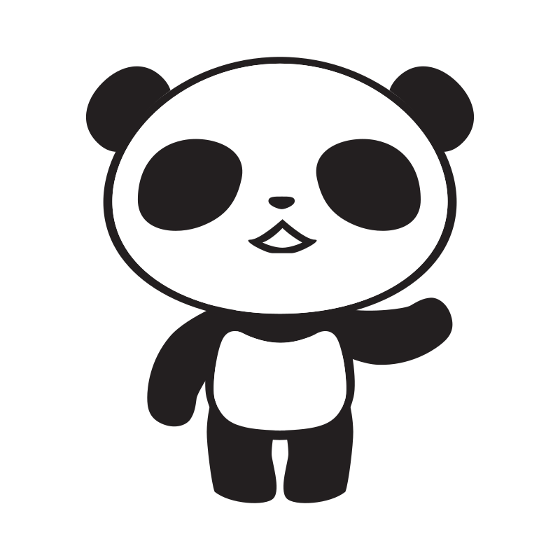

前端工程師
網站介面設計
網站介面設計
數位發展策略、內容行銷策展兼專業寫手

Hi
作品集

Mimi Chat
即時通訊軟體APP
品牌LOGO設計, 介面設計
讓對話訊息更保有隱私。
設計LOGO、設計APP整體使用介面，因此通訊軟體的獨特性，在品牌LOGO上加上太陽眼鏡，並在對話介面上的ICON上透過運用不同深淺度的太陽眼鏡之小巧思，來顯示目前對話訊息的透明度。
我的信念
生活就是離不開
服務項目
介面與流程設計
經由需求定義、資訊架構規劃、使用者分析，將客戶需求與使用者所能獲得的價值綜觀性考量，規劃出流程的交互原型與流程。
內容行銷策略與代寫
運用有策略的內容，撰寫出符合需求之文案，如代寫文章、網站文案、公司簡介...等。用文字幫品牌說個好故事。
網站前端開發
透過在網頁設計時加入的前端互動，建置吸引人的RWD網站，讓消費者能獲得所需資訊外更能進一步採取行動
數位發展規劃
藉由品牌定位規劃、品牌形象策劃、活動策展，為品牌策劃前端形象定位，為品牌打造出擁獨性品牌個性。
WORK HARD
PLAY HARD

李珮瑜 Lisa Li
擁有三年多數位產品UI/UX介面設計經驗，喜愛藉由設計來解決問題，對網頁設計與建置有極大的熱情。經手過線上、線下活動企劃與策展、品牌定位策略規劃，在使用驗體設計上能更深入考量如何串連O2O線上與線下虛實體驗。期望將過往在UI/UX及品牌規劃上的經驗帶到前端領域之中，打造符合趨勢且獨特的互動體驗。
學歷
實踐大學 資訊科技與管理學系
非常愛 大 熊 貓 ！！！
Nov. 2014
Mar. 2017
Mar. 2017
名象品牌行銷策略股份有限公司
網站企畫、介面設計、網站專案管理
以品牌為核心，對焦客戶需求，建構網站策略，規劃超過15個官方網站、3個活動網站。服務客戶從軟體服務、民生消費、醫美保養到教育等產業。
以品牌為核心，對焦客戶需求，建構網站策略，規劃超過15個官方網站、3個活動網站。服務客戶從軟體服務、民生消費、醫美保養到教育等產業。
Jul. 2012
Sep. 2014
Sep. 2014
甦活創意管理顧問股份有限公司
專案執行與客戶關係管理
連續兩年執行全台最大500攤戶外展售會「城鄉禮讚」，並開發優質台灣品牌參與展售活動
連續兩年執行全台最大500攤戶外展售會「城鄉禮讚」，並開發優質台灣品牌參與展售活動
Jul. 2011
Jun. 2012
Jun. 2012
雄獅旅行社股份有限公司 專案企劃部
活動企畫、活動專案開發與管理
開發潛在客戶，達成10%的實際拜訪與提案，接進台灣賓士2012尾牙活動、AMD Taiwan Team Building活動。
開發潛在客戶，達成10%的實際拜訪與提案，接進台灣賓士2012尾牙活動、AMD Taiwan Team Building活動。
Sep. 2009
Aug. 2010
Aug. 2010
際標資訊科技股份有限公司
網站企畫、前後台介面設計、網站推廣
優化「台灣走走網」旅遊資訊平台之整體流程及介面，並策動上百位部落客提供優質旅遊資訊。
優化「台灣走走網」旅遊資訊平台之整體流程及介面，並策動上百位部落客提供優質旅遊資訊。
Nov. 2014
Mar. 2017
Mar. 2017
名象品牌行銷策略股份有限公司
網站企畫、介面設計、網站專案管理
以品牌為核心，對焦客戶需求，建構網站策略，規劃超過15個官方網站、3個活動網站。服務客戶從軟體服務、民生消費、醫美保養到教育等產業。
以品牌為核心，對焦客戶需求，建構網站策略，規劃超過15個官方網站、3個活動網站。服務客戶從軟體服務、民生消費、醫美保養到教育等產業。
Jul. 2012
Sep. 2014
Sep. 2014
甦活創意管理顧問股份有限公司
專案執行與客戶關係管理
連續兩年執行全台最大500攤戶外展售會「城鄉禮讚」，並開發優質台灣品牌參與展售活動
連續兩年執行全台最大500攤戶外展售會「城鄉禮讚」，並開發優質台灣品牌參與展售活動
Jul. 2011
Jun. 2012
Jun. 2012
雄獅旅行社股份有限公司 專案企劃部
活動企畫、活動專案開發與管理
開發潛在客戶，達成10%的實際拜訪與提案，接進台灣賓士2012尾牙活動、AMD Taiwan Team Building活動。
開發潛在客戶，達成10%的實際拜訪與提案，接進台灣賓士2012尾牙活動、AMD Taiwan Team Building活動。
Sep. 2009
Aug. 2010
Aug. 2010
際標資訊科技股份有限公司
網站企畫、前後台介面設計、網站推廣
優化「台灣走走網」旅遊資訊平台之整體流程及介面，並策動上百位部落客提供優質旅遊資訊。
優化「台灣走走網」旅遊資訊平台之整體流程及介面，並策動上百位部落客提供優質旅遊資訊。